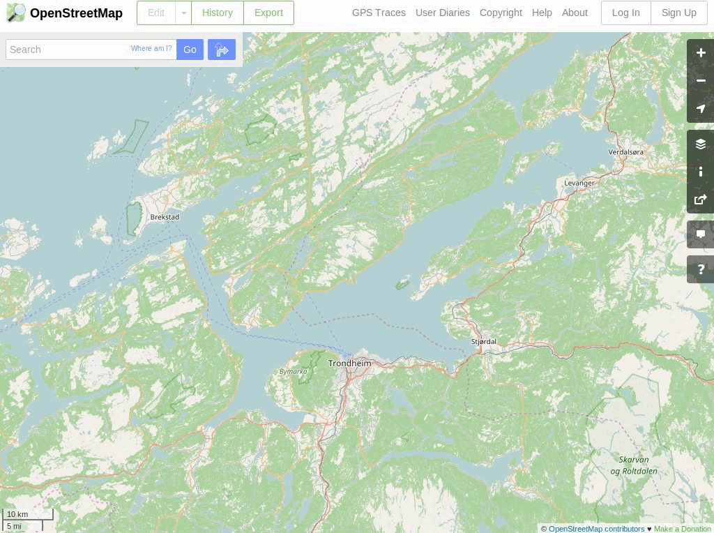

OpenStreetMap¶
Datos de mapas¶
OpenStreetMap es un mapa del mundo creado por una multitud de personas, que se ha convertido en una de las fuentes más detalladas de datos de mapas a escala local disponibles. Los datos del mapa fuente son creados y mantenidos por miles de voluntarios de todo el mundo, utilizando procesos similares al mantenimiento de la enciclopedia de wikipedia.
El aspecto más visible de OSM es la interfaz en línea de mosaico web de https://www.openstreetmap.org, pero los mapas también se pueden ver, importar o editar en muchas aplicaciones como QGIS , OpenLayers, ArcGIS y aplicaciones dedicadas de OSM.
El corazón del proyecto es la información subyacente que está abierta para que todos puedan editar, ver o crear mapas personalizados. Fundamentalmente, el enfoque de OSM está en los datos, los mapas ricos simplemente se salen de esto.
La distribución de OSGeoLive incluye un extracto de datos de OSM del tamaño de una ciudad, que algunas aplicaciones usan como ejemplos.
{kind=link}
Características Principales¶
- Las características del vector están etiquetadas con nombres y otros atributos.
- Extrae subconjuntos locales de los datos.
- Los datos se almacenan como nodos WGS84 de longitud de latitud, cadenas de nodos y meta-características que permiten el punto, la polilínea, la cobertura de área y las relaciones.
- Etiquetado rico de atributos, a menudo mucho más detallado que cualquier otra fuente.
- Un repositorio global de conocimiento local.
Data Sets included in OSGeo LiveConjuntos de datos incluidos en OSGeo Live¶
- feature_city.osm.bz2: Un gran extracto del área metropolitana de la ciudad como archivo de texto XML comprimido en BZip2.
- feature_city_CBD.osm.bz2: Un subconjunto más pequeño que cubre solo el Distrito Comercial Central (CBD).
- feature_city_poi.db: Sqlite DB de nodos de «posiciones de interés» extraídos de la anterior ciudad más grande, a su vez extraída de OSM. Contiene ubicaciones de bares, gasolineras, restaurantes, supermercados, etc.
- Los archivos que hacen referencia al nombre de la ciudad mostrada contienen los mismos datos que los archivos anteriores. Las Guías de Inicio Rápidos y las Vistas Generales utilizan los nombres genéricos de los archivos, para que la ciudad ejemplo pueda cambiar con cada nueva versión.
Los datos de ciudad de la característica OSM se han importado a una base de datos PostGIS llamada «osm_local» utilizando la herramienta osm2pgsql. El sistema de referencia espacial utilizado para esta base de datos es latitud-longitud con el datum WGS84 (EPSG código 4326) y puede reproyectarse a otros sistemas de referencia espacial (SRS), como Spherical-Mercator, según demanda. El extracto CBD más pequeño se carga en otra base de datos PostGIS llamada «pgrouting».
Detalles¶
Sitio web: https://www.openstreetmap.org/
Licencia: Open Data Commons Open Database License (ODbL)
Versión de datos: Extracto de base de datos en vivo
Formato de datos: XML
Sistema de coordenadas espaciales: WGS84 latitud y longitud
Soporte: https://www.openstreetmap.org/help